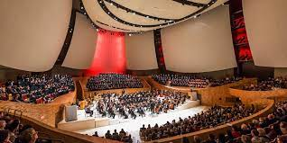

| Stanford Performing Arts | Autumn 2012 Edition |
|---|---|
| Bing Concert Hall | Calendar |
|---|---|
| The Bing Concert Hall at Stanford will play a vital role on campus and in the local community. The gall's exceptional acoustics and state-of-the-art technical capabilities will show case the world's finest performers The hall is scheduled to open early in 2013. The concert hall will hancve 844 seats in an intimate wineyard-style configuratino, with terraced sections wrapping all the way around the stage |
Harmony for Humanity: Daniel Pearl World Music Cnoncert | Sundays with the St. Lawrence String Quartet |
| Merce Cunningham Dance Company | |
| Juilliard String Quartet |